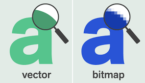
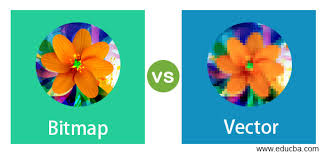

Een afbeelding wordt scherper naarmate er meer pixels in zitten, maar dit betekent ook dat de afbeelding meer opslagruimte nodig heeft. Afbeeldingen die uit pixels zijn samengesteld, worden bitmapafbeeldingen genoemd. Twee belangrijke nadelen van bitmapafbeeldingen zijn dat ze veel opslagruimte verbruiken en dat de pixels zichtbaar worden als je inzoomt, wat de scherpte vermindert.
Om deze problemen aan te pakken, is het concept van vectorafbeeldingen ontstaan. In plaats van de individuele pixelwaarden op te slaan, worden bij een vectorafbeelding alleen de vormen en hun kenmerken vastgelegd. Dit is vooral handig voor grote afbeeldingen, zoals die op reclameborden, omdat ze minder opslagruimte vereisen en scherp blijven, ongeacht de grootte.
Een afbeelding kan dus als bitmap of als vector worden opgeslagen. Bij een bitmapafbeelding worden de waarden van elke pixel bewaard, bijvoorbeeld 88 pixels in totaal. Bij een vectorafbeelding worden alleen de eigenschappen zoals vorm, positie, grootte en kleur opgeslagen, bijvoorbeeld 'vierkant 2,2: blauw'. Dit vergt veel minder ruimte. Bij het inzoomen op een vectorafbeelding blijven er geen pixels zichtbaar. Een nadeel is echter dat je alleen eenvoudige vormen kunt opslaan, zonder variaties in kleur.
Afbeeldingen bestaan uit pixels, terwijl geluid uit trillingen bestaat. Om geluid op te slaan, moeten deze trillingen worden omgezet in digitale waarden. Dit gebeurt via een tussenstap waarbij de trillingen in elektrische signalen worden omgezet, vaak met een microfoon. De computer zet deze signalen dan om in digitale waarden, wat we samplen noemen. Tijdens dit proces wordt op regelmatige intervallen gemeten hoe sterk het geluid is.
Geluid bestaat uit trillingen, terwijl afbeeldingen uit pixels bestaan. Om geluid op te slaan, moeten deze trillingen eerst worden omgezet in elektrische signalen met behulp van een microfoon. Vervolgens worden deze signalen door de computer omgezet in digitale waarden, een proces dat sampling wordt genoemd. Hierbij wordt op regelmatige tijdstippen de sterkte van het geluid gemeten
De verschillende gemeten waarden kunnen vervolgens worden omgezet in binaire getallen. Deze binaire waarden worden gestructureerd in een tabel. Ze worden opgeslagen en wanneer het geluid weer wordt afgespeeld, worden ze opnieuw omgezet naar elektrische signalen. De sample rate geeft aan hoeveel samples er per seconde worden genomen.
Deze waarden kunnen worden weergegeven in een grafiek en omgezet naar binaire getallen. Deze binaire waarden worden opgeslagen, en wanneer het geluid afgespeeld wordt, worden ze weer omgezet naar elektrische signalen. De sample rate geeft aan hoeveel samples er per seconde worden genomen.